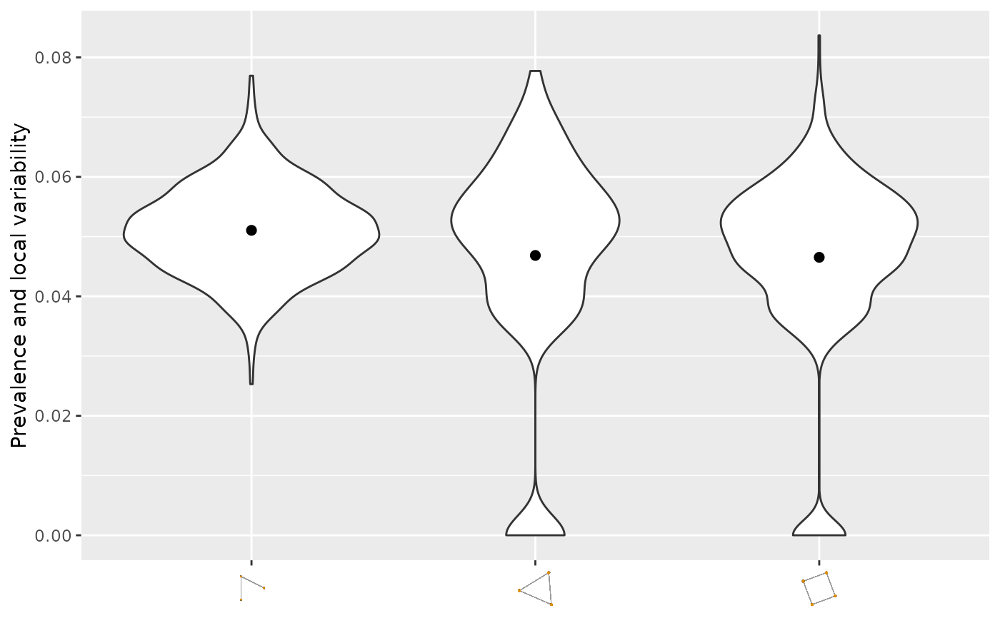
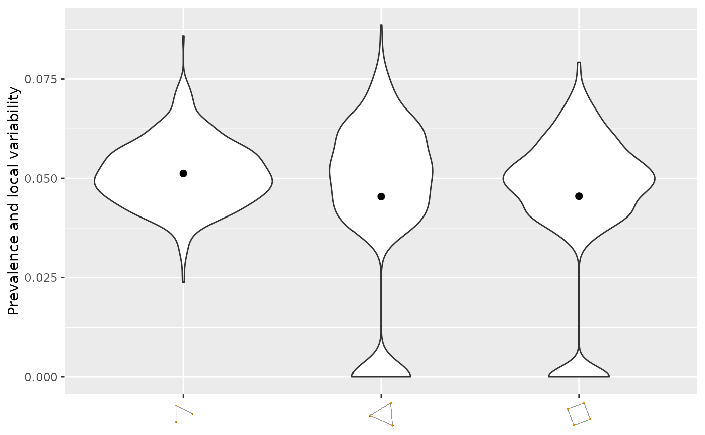
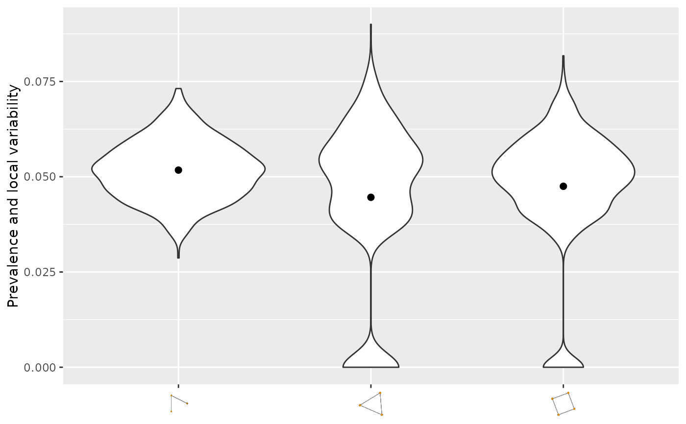
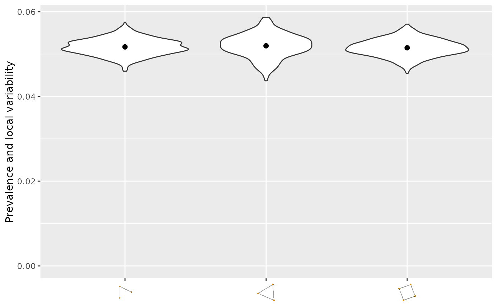
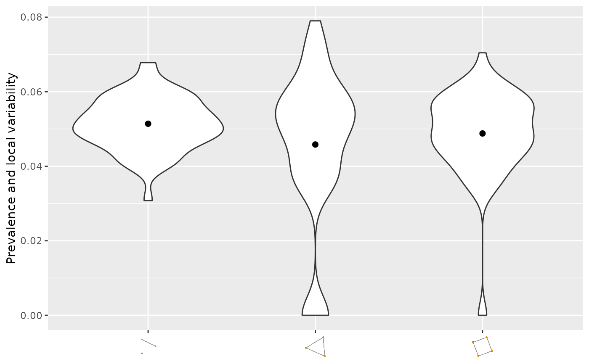
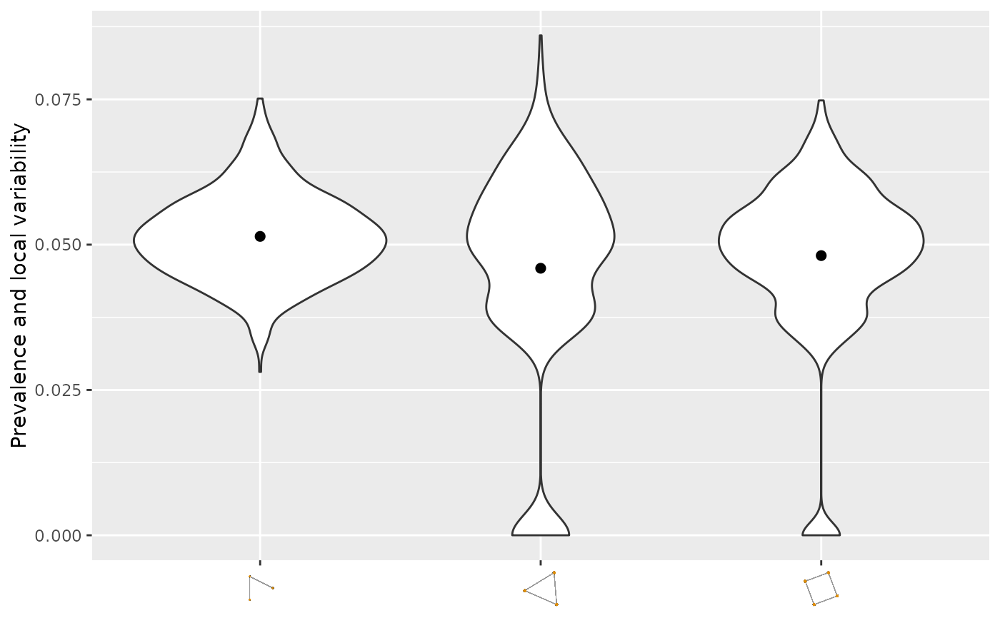
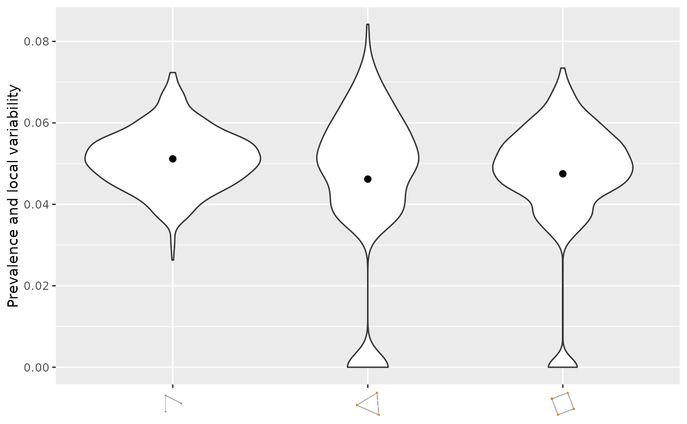

Network summary plots
netsummary_plot.RdDraw a network summary plot proposed by Maugis et al. (2017). To count k-cycles, Alon et al. (1997) is used.
Usage
netsummary_plot(
A,
subsample_sizes = NA,
max_cycle_order = 4,
n_rep = NA,
n_subsample_sizes = 11,
alpha = 0.05,
y_max = NA,
save_plot = FALSE,
filename = "myplot.pdf",
width = 7,
height = 5,
max_subsample_size = 250,
...
)
violin_netsummary(A, ...)Arguments
- A
an adjacency matrix, igraph object, or network object to draw a network summary plot. It must be an undirected and simple graph.
- subsample_sizes
a numeric vector of vertex subsample sizes. If
NA, the subsample size is selected automatically.- max_cycle_order
an integer value of the maximum cycle size. Must be
>=3and<=7.- n_rep
an integer value of subsampling replication. If
NA,n_repis automatically selected byalpha.- n_subsample_sizes
number of different subsample sizes for automatic selection. It is only used when
subsample_sizes = NA.- alpha
a pre-specified level used in determining
n_repandsubsample_sizeswhen they are not specified. It must be in (0,1). Default is 0.05. Smalleralphagives largern_repandsubsample_sizes.- y_max
Upper limit of y-axis of the plot. Must be 0 <
y_max<= 1. IfNA, the upper limit is automatically selected.- save_plot
A logical indicating whether to save the generated figure. If
TRUE, the plot is saved viaggplot2::ggsave()using the specified file name. Otherwise, the plot is displayed.- filename
file name to save the generated figure.
- width
a numeric value of the width of the generated figure in inch. It is only used when
save_plot = TRUE.- height
a numeric value of the height of the generated figure in inch. It is only used when
save_plot = TRUE.- max_subsample_size
integer. Upper bound on the automatically selected subsample size. Larger values improve statistical accuracy but increase computation time. Default is 250.
- ...
![[Deprecated]](figures/lifecycle-deprecated.svg) Pass
Pass R,Ns,y.max, orsave.plotvia the renamed argumentsn_rep,n_subsample_sizes,y_max, andsave_plotinstead.
Value
A ggplot object. Printed as a side effect when save_plot = FALSE.
Returns the plot invisibly when save_plot = TRUE.
Details
Vertex sampling is done by simple random sampling without replacement.
The automatically selected subsample size is capped at max_subsample_size
to limit computation time.
Each violin shows the distribution of the subsampled statistic, and a dot marks the mean.
The following input classes are supported: base::matrix, Matrix::dgCMatrix, igraph::igraph, network::network.
References
Maugis et al. (2017). Topology reveals universal features for network comparison. arXiv: 1705.05677
Alon et al. (1997). Finding and counting given length cycles. Algorithmica 17, 209–223 (1997). https://doi.org/10.1007/BF02523189
Examples
{
set.seed(2022)
#Generating Erdos-Renyi graph
n <- 400
#igraph object
A <- igraph::sample_gnp(n, 0.05)
netsummary_plot(A)
}
#> Use n_rep = 574

# \donttest{
#sparse adjacency matrix
A2 <- igraph::as_adjacency_matrix(A)
netsummary_plot(A2)
#> Use n_rep = 574

#dense adjacency matrix
A2 <- igraph::as_adjacency_matrix(A, sparse = FALSE)
netsummary_plot(A2)
#> Use n_rep = 574

#user-specified n_rep and subsample_sizes
netsummary_plot(A, n_rep = 500, subsample_sizes = 150)

#user-specified alpha
netsummary_plot(A, alpha = 0.1)
#> Use n_rep = 114

#network object
A3 <- network::as.network(igraph::as_adjacency_matrix(A, sparse = FALSE))
netsummary_plot(A3)
#> Use n_rep = 574

#user-specified max_subsample_size
netsummary_plot(A, max_subsample_size = 100)
#> Use n_rep = 574

#saving the plot with user-specified file name
netsummary_plot(A, save_plot = TRUE,
filename = file.path(tempdir(), "myfig.pdf"))
#> Use n_rep = 574
# }